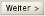
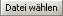
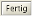
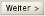
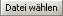
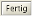

Rasterdaten können in Form von georeferenzierten Bilddateien (mit WorldFile), einen wms (Web Map Service) oder
wcs (Web Coverage Service) in ein Projekt geladen werden.
Bilddateien (*.gif, *.tif, *.png, *.jpg, *.bmp) können
folgendermaßen geladen werden:
Entweder über die Menüleiste zu
Projekt > Ebene aus Datei hinzufügen
navigieren (bzw. die Tastenkombination
Alt+F
verwenden). Aus der angebotenen Liste die entsprechende Datei auswählen, und durch
Betätigen des
öffnen
-Buttons übernehmen. Die Datei wird, ohne dass weitere Einstellungen vorgenommen
werden können, dem aktuellen Projekt an der untersten Position in der Ebenenansicht
zugefügt.
Oder über den Startdialog
Ebene hinzufügen
zu
Rasterdaten >  Datei
navigieren, diesen Eintrag markieren auf  und
anschließend auf  klicken.
Aus der angebotenen Liste die entsprechende Datei auswählen, und durch
Betätigen des
öffnen
-Buttons übernehmen. Im Anschluss daran können Angaben zu Name, Titel,
Kurzbeschreibung und Koordinatensystem gemacht werden. Nachdem auf
 geklickt wurde, wird die ausgewählte Ebene an der
untersten Position in der Ebenenansicht hinzugefügt. Datei
navigieren, diesen Eintrag markieren auf  und
anschließend auf  klicken.
Aus der angebotenen Liste die entsprechende Datei auswählen, und durch
Betätigen des
öffnen
-Buttons übernehmen. Im Anschluss daran können Angaben zu Name, Titel,
Kurzbeschreibung und Koordinatensystem gemacht werden. Nachdem auf
 geklickt wurde, wird die ausgewählte Ebene an der
untersten Position in der Ebenenansicht hinzugefügt.
Auf den wms kann wie folgt zugegriffen werden:
Innerhalb des Dialogfensters
Ebene hinzufügen
über
Rasterdaten
zu
WMS
navigieren, diesen Eintrag markieren und auf klicken.
Innerhalb des nächsten Dialoges entweder aus den vorkonfigurierten Services den
gewünschten Service auswählen, oder selbigen als URL manuell eingeben und auf
klicken.
Die nun zur Verfügung stehenden Ebenen unterscheiden sich hinsichtlich ihrer
Anfragemöglichkeiten wie folgt:
• = GetMap und GetFeatureInfo Anfrage
möglich
• = GetMap möglich aber kein GetFeatureInfo
• = GetMap und GetFeatureInfo Anfrage nicht
möglich (WMS kann nicht geladen werden)
Im Anschluss daran können die gewünschten Ebenen einzeln oder als thematische
Gruppe, durch Klicken auf ausgewählt und der
Ebenenauswahl hinzugefügt bzw. durch wieder aus der
Ebenenauswahl entfernt werden.
Durch das Klicken auf werden alle verfügbaren Ebenen
in die Auswahl übernommen, bzw. durch
entfernt. Werden mehrere Ebenen in die Ebenenauswahl übernommen, kann ihre
Reihenfolge über die entsprechenden Pfeilbuttons
angepasst werden.
Um eine Ebene in die Auswahl übernehmen oder verschieben zu können, muss diese
zuvor selektiert werden. Ist die Auswahl und Reihenfolge festgelegt, können die
gewünschten Ebenen ohne weitere Einstellungen vorzunehmen in das aktuelle Projekt
geladen werden indem auf geklickt wird.
In diesem Fall, wird der Kartenhintergrund nicht transparent dargestellt und alle
ausgewählten Ebenen werden in der angegebenen Reihenfolge zu einer Ebene
zusammengefasst, welche im .gif-Format geladen wird.
Es können allerdings auch weitere Einstellungen vorgenommen werden, bevor die
Ebene(n) final geladen werden, hierzu auf klicken:
• Vorschau der Ebenendarstellung anzeigen:
Häkchen im betreffenden Feld setzen und auf die gewünschte Ebene klicken
• Auswahl des Bild-Formates: *.gif, *.png, *.jpg, *.tif, *.bmp
• Transparente Darstellung des Hintergrundes: immer dann empfehlenswert, wenn die
Ebene nicht als unterste Ebene angezeigt werden soll.
• Einzelnes Laden der ausgewählten Ebenen: in diesem Fall können Namen,
Titel und Kurzbeschreibung für die einzelnen Ebenen vergeben werden.
• Bearbeitung der Ebeneninformationen: Name, Titel, Kurzbeschreibung, Eingrenzung
des Maßstabsbereiches
Auf den wcs kann wie folgt zugegriffen werden:
Innerhalb des Dialogfensters Ebenen hinzufügen über Rasterdaten zu WCS navigieren, diesen Eintrag markieren und auf klicken.
Innerhalb des nächsten Dialoges entweder aus den vorkonfigurierten Services den gewünschten Service auswählen, oder selbigen als URL manuell eingeben und auf klicken.
Innerhalb des nächsten Dialoges aus den verfügbaren Coverages das/die gewünschten auswählen (selektieren) und mittels des Buttons in die Auswahl übernehmen und auf klicken. In diesem Fall wir das gewünschte Coverage als *.jpeg geladen.
Es besteht außerdem die Möglichkeit, innerhalb der nächsten zwei Dialogfenster das gewünschte Bildformat zu modifizieren (*.jpeg, *.GeoTIFF, *.png) und weiterführende Angaben zur neue Ebene vorzunehmen (Name, Titel, Kurzbeschreibung, Eingrenzung des Maßstabsbereiches).
Hierfür jeweils auf klicken.
|